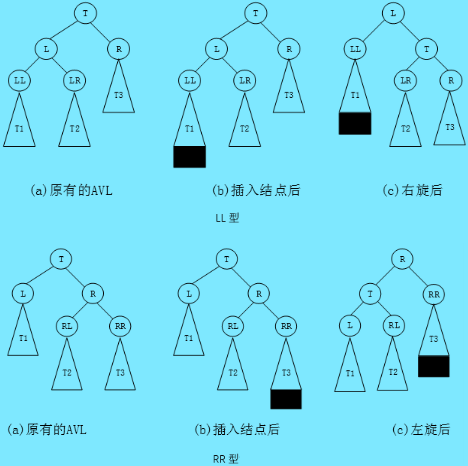
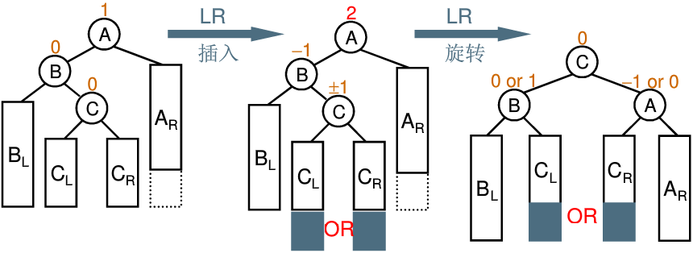
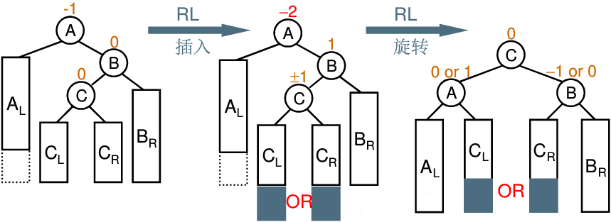

AVL树是一种高度平衡的二叉树，它改进了普通二叉搜索树在极端情况下会退化成单支效率低下的问题，AVL树中在每个节点中加入了平衡因子，使得左右子树的高度差不超过1，这样可以使得高度保持在log n，从而避免的极端情况下的查找效率低下问题，但是如果要对AVL树做一些结构修改的操作，性能非常低下，比如：插入时要维护其绝对平衡，旋转的次数比较多，更差的是在删除时，有可能一直要让旋转持续到根的位置。因此：如果需要一种查询高效且有序的数据结构，而且数据的个数为静态的(即不会改变)，可以考虑AVL树，但一个结构经常修改，就不太适合
插入：
首先根据二叉搜索树的规则插入新的节点，然后调整平衡因子即可
如果新节点插入到Parent的左侧，则Parent的平衡因子-1
如果新节点插入到Parent的右侧，则Parent的平衡因子+1
这时Parent的平衡因子有三种情况-1、0、1
若为0，则说明之前的平衡因子为-1/1，插入后调整为0，则插入成功返回即可
若为-1/1，则说明之前的平衡因子为0，插入后变为-1/1，则AVL树高度增加需要向上寻找，看看有没有别的平衡被破坏的节点
若为2，则说明违反了AVL树的性质，需要旋转处理
旋转：根据节点插入位置的不同，AVL树的旋转分为四种
- Parent的平衡因子为2，说明Parent的右子树高，设Parent的右子树的根为SubR
当SubR的平衡因子为1时，执行左单旋
当SubR的平衡因子为-1时，执行右左双旋 - Parent的平衡因子为-2，说明Parent的左子树高，设Parent的左子树的根为SubL
当SubL的平衡因子为-1是，执行右单旋
当SubL的平衡因子为1时，执行左右双旋
旋转完成后，原Parent为根的子树个高度降低，已经平衡，不需要再向上更新
单旋：

双旋：


1
2
3
4
5
6
7
8
9
10
11
12
13
14
15
16
17
18
19
20
21
22
23
24
25
26
27
28
29
30
31
32
33
34
35
36
37
38
39
40
41
42
43
44
45
46
47
48
49
50
51
52
53
54
55
56
57
58
59
60
61
62
63
64
65
66
67
68
69
70
71
72
73
74
75
76
77
78
79
80
81
82
83
84
85
86
87
88
89
90
91
92
93
94
95
96
97
98
99
100
101
102
103
104
105
106
107
108
109
110
111
112
113
114
115
116
117
118
119
120
121
122
123
124
125
126
127
128
129
130
131
132
133
134
135
136
137
138
139
140
141
142
143
144
145
146
147
148
149
150
151
152
153
154
155
156
157
158
159
160
161
162
163
164
165
166
167
168
169
170
171
172
173
174
175
176
177
178
179
180
181
182
183
184
185
186
187
188
189
190
191
192
193
194
195
196
197
198
199
200
201
202
203
204
205
206
207
208
209
210
211
212
213
214
215
216
217
|
#include <iostream>
template <class K, class V>
struct AVLNode {
AVLNode(const std::pair<K, V>& data)
: _data(data)
, _left(nullptr)
, _right(nullptr)
, _parent(nullptr)
, _bf(0) {}
std::pair<K, V> _data;
AVLNode<K, V>* _left;
AVLNode<K, V>* _right;
AVLNode<K, V>* _parent;
int _bf;
};
template <class K, class V>
class AVLTree {
public:
typedef AVLNode<K, V> Node;
typedef Node* pNode;
bool Insert(const std::pair<K, V>& data) {
if (_root == nullptr) {
_root = new Node(data);
return true;
}
pNode cur = _root;
pNode parent = nullptr;
while (cur) {
parent = cur;
if (cur->_data.first == data.first) {
return false;
} else if (cur->_data.first > data.first) {
cur = cur->_left;
} else {
cur = cur->_right;
}
}
cur = new Node(data);
if (parent->_data.first > data.first) {
parent->_left = cur;
} else {
parent->_right = cur;
}
cur->_parent = parent;
while (parent) {
if (parent->_right == cur) {
++parent->_bf;
} else {
--parent->_bf;
}
if (parent->_bf == -1 || parent->_bf == 1) {
cur = parent;
parent = parent->_parent;
} else if (parent->_bf == 0) {
break;
} else {
if (parent->_bf == -2 && cur->_bf == -1) {
RotateRight(parent);
} else if (parent->_bf == 2 && cur->_bf == 1) {
RotateLeft(parent);
} else if (parent->_bf == 2 && cur->_bf == -1) {
int bf = cur->_left->_bf;
RotateRight(cur);
RotateLeft(parent);
if (bf == -1) {
cur->_bf = 1;
} else if (bf == 1) {
parent->_bf = -1;
} else {
parent->_bf = 0;
}
} else if (parent->_bf == -2 && cur->_bf == 1) {
int bf = cur->_right->_bf;
RotateLeft(cur);
RotateRight(parent);
if (bf == -1) {
parent->_bf = 1;
} else if (bf == 1) {
cur->_bf = -1;
} else {
parent->_bf = 0;
}
}
break;
}
}
}
void RotateRight(pNode parent) {
pNode subL = parent->_left;
pNode subLR = subL->_right;
subL->_right = parent;
parent->_left = subLR;
pNode gParent = parent->_parent;
parent->_parent = subL;
if (subLR) {
subLR->_parent = parent;
}
if (parent != _root) {
if (gParent->_left == parent) {
gParent->_left = subL;
} else {
gParent->_right = subL;
}
subL->_parent = gParent;
} else {
_root = subL;
subL->_parent = nullptr;
}
subL->_bf = parent->_bf = 0;
}
void RotateLeft(pNode parent) {
pNode subR = parent->_right;
pNode subRL = subR->_left;
subR->_left = parent;
parent->_right = subRL;
if (subRL) {
subRL->_parent = parent;
}
if (parent != _root) {
if (parent->_parent->_left == parent) {
parent->_parent->_left = subR;
} else {
parent->_parent->_right = subR;
}
subR->_parent = parent->_parent;
} else {
_root = subR;
subR->_parent = nullptr;
}
parent->_parent = subR;
subR->_bf = parent->_bf = 0;
}
void Inorder() {
_Inorder(_root);
std::cout << std::endl;
}
int Height(pNode root) {
if (root == nullptr) {
return 0;
}
int leftH = Height(root->_left);
int rightH = Height(root->_right);
return leftH > rightH ? leftH + 1 : rightH + 1;
}
bool isBalance() {
return _isBalance(_root);
}
private:
void _Inorder(pNode root) {
if (root) {
_Inorder(root->_left);
std::cout << root->_data.first << ":" << root->_data.second << " ";
_Inorder(root->_right);
}
}
bool _isBalance(pNode root) {
if (root == nullptr) {
return true;
}
int rightH = Height(root->_right);
int leftH = Height(root->_left);
if (root->_bf != rightH - leftH) {
std::cout << root->_data.first << ":" << root->_data.second << "不平衡" << std::endl;
std::cout << "平衡因子:" << root->_bf << "高度差：" << rightH - leftH << std::endl;
return false;
}
return abs(root->_bf) < 2
&& _isBalance(root->_left)
&& _isBalance(root->_right);
}
pNode _root = nullptr;
};
|